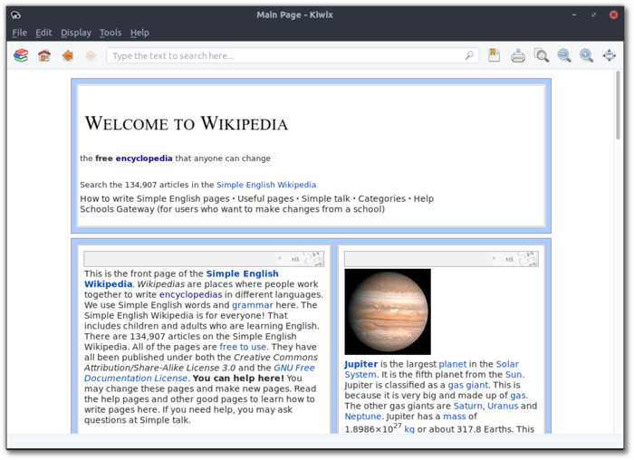
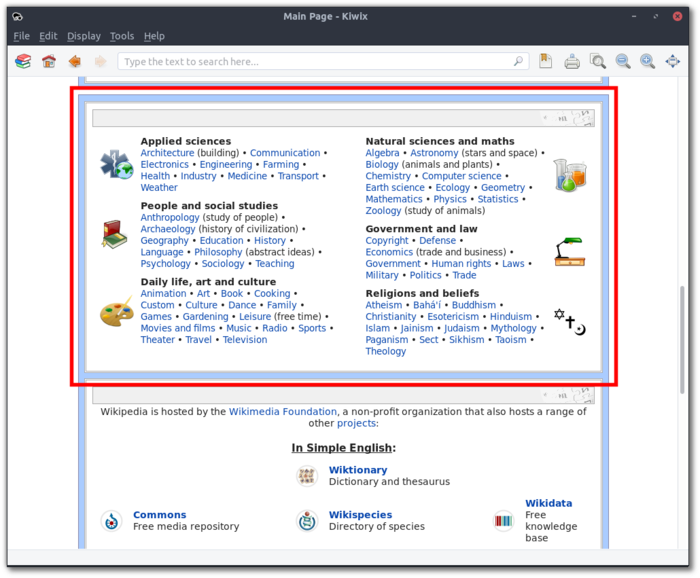
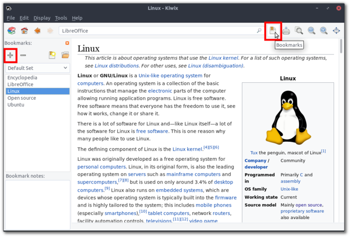

Kiwix: Wikipedia Offline
Kiwix is a software utility created to use Wikipedia and other large web-based content resources when internet is not available.

Here is an introduction to Kiwix from their website:
The world has a connectivity issue
In many places internet can be slow, unreliable or even censored. Kiwix is an offline solution that allows you to access educational content like Wikipedia, the Wiktionary, TED talks and many others on any computer or smartphone - without the need for a live internet connection.
We bring internet content to people without internet access
In schools, universities, prisons, and of course at home. Locally-stored content saves bandwidth and download time. Kiwix is small and efficient, works on low power or old computers. It also runs on a wide range of operating systems, from Android and iOS to Microsoft Windows, macOS and GNU/Linux distributions.
In order to simplify the installation of Kiwix and the Kiwix simple English version of Wikipedia for offline use, the Wasta-Linux team has packaged them and made them available to users of Debian-based Linux distributions.
Kiwix Installation
The legacy version of Kiwix has been made available since the newest version of Kiwix is not yet stable for use in Linux. You can download it here:
Kiwix-Legacy Download (updated 2019-01-08)
- md5: 11d5869979194c913cfb1a34c0227a4c
Wikipedia (simple English version) Installation for use with Kiwix
After Kiwix is installed, you can install any of the content downloaded from Kiwix directly, but then you would need to manually configure it to automatically load and have it generate an index file for easy searching. So if you want the simple English version of Wikipedia, instead download and install the package created by the Wasta-Linux team:
Kiwix-Wikipedia-Simple-English Download (updated 2018-06-26)
md5: 1bb283f30fcf1ec28de836aed8bbeff0
NOTE: Since the simple English version of Wikipedia is around 1.6 GB in size, it is not recommended that it be pre-installed in a Wasta-Linux custom ISO since the maximum size of any such ISO is 4.0 GB total.
Kiwix Usage
If you have installed the above two items, you should now find Kiwix in your Main Menu, and it should open automatically to the offline copy of the simple English version of Wikipedia. If you scroll down the default page, you should find a browseable category view (hilighted below):

You can also select the “Bookmarks” button (hilighted below in) in order to view, add, and delete bookmarks to pages that you want to keep for quick access. You can save notes on each bookmarked page in the bottom left:
